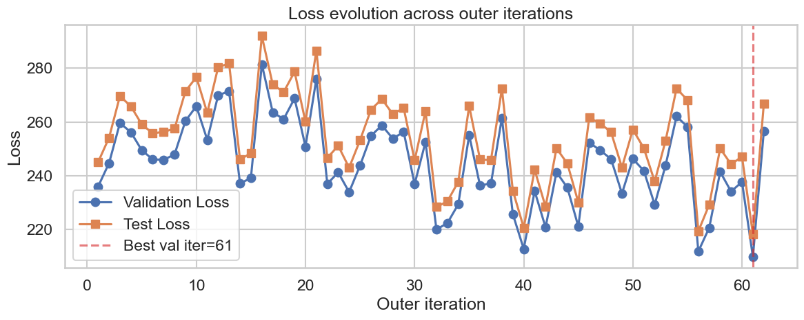

Learning Node Orderings for
Autoregressive Graph Generation
Alysson Amaral da Silva
Orientador: Prof. Dr. Andre Luis Vignatti
Programa de Pós-Graduação em Informática — UFPR
2026
Bloco 1 · Motivação e contextualização
Grafos estão em todo lugar
- Moléculas (átomos + ligações)
- Redes sociais (pessoas + conexões)
- Circuitos (componentes + fios)
- Grafos de conhecimento (entidades + relações)
Aplicações: descoberta de fármacos, design de materiais, modelagem de redes, aprender a gerar novos grafos a partir de dados observados.
Objetivo dos modelos autoregressivos
Modelar a distribuição dos dados como uma sequência de decisões, em que cada passo depende apenas do histórico anterior.
\(P(\text{seq}) = \prod_{t=1}^{T} P(a_t \mid a_1, \ldots, a_{t-1})\)
- \(P\): probabilidade (quão provável é uma sequência ou uma ação dado o histórico).
- \(T\): número total de passos na sequência de construção.
- \(t\): índice do passo atual (\(t = 1, 2, \ldots, T\)).
- \(a_t\): ação tomada no passo \(t\) (por exemplo, AddNode, AddEdge, ChooseDest).
- Treino: maximizar a verossimilhança das sequências de construção observadas (teacher forcing).
- Geração: amostrar novas estruturas passo a passo, condicionando cada ação no que já foi construído.
- No caso de grafos: cada passo pode ser AddNode, AddEdge, ChooseDest, etc., a ordem dos nós define qual sequência o modelo aprende.
O problema central: invariância a permutação
Um grafo com \(n\) nós admite até \(n!\) permutações de rótulos, todas representam o mesmo grafo.
- Redes neurais operam sobre tensores e sequências ordenadas.
- Para treinar um modelo, precisamos fixar uma ordem dos nós.
- Tensão fundamental: estrutura invariante vs. representação ordenada.
De grafo para sequência de ações
Dado um grafo \(G = (V, E)\) e uma ordenação \(\sigma = (v_1, \ldots, v_n)\):
AddNode
→
AddEdge
→
ChooseDest
→
StopEdge
→
…
→
StopNode
Ordenação A: \(\sigma_A = [1,2,3,4,5]\)
[AddNode, StopEdge, AddNode, AddEdge, ChooseDest(1), StopEdge, …]
Ordenação B: \(\sigma_B = [3,5,1,4,2]\)
[AddNode, StopEdge, AddNode, AddEdge, ChooseDest(1), StopEdge, …]
Mesmos tokens, destinos diferentes!
Mudar a ordenação dos nós muda toda a sequência de decisões que o modelo vê durante o treino.
Geradores autorregressivos de grafos
Modelos que constroem grafos passo a passo, por decisões locais condicionadas no histórico de construção.
- Diversas abordagens na literatura (GraphRNN, GRAN, etc.).
- Neste trabalho, usamos o DGMG como ambiente controlado.
Pergunta central
"A ordenação dos nós é um detalhe de implementação
ou uma escolha de modelagem com impacto real?"
Tese: a ordenação é uma variável de modelagem, e pode ser otimizada.
Bloco 2 · Ordenações determinísticas
Referências determinísticas de ordenação
Princípio do experimento: arquitetura DGMG fixa, só muda a ordenação aplicada antes da tradução grafo → sequência.
- Degree
- Nós de maior grau primeiro (highest-degree nodes first).
- BFS
- Busca em largura: expande a fronteira nível a nível a partir de uma raiz.
- DFS
- Busca em profundidade: segue um caminho até o fim antes de retroceder.
- Degeneracy
- Ordenação smallest-last / core-based: remove repetidamente vértices de menor grau.
- LexBFS
- BFS lexicográfica: desempata com rótulos induzidos pelos nós já selecionados.
- MCS
- Maximum cardinality search: prioriza o nó com mais vizinhos já selecionados.
- Spectral
- Ordenação induzida por embedding espectral (autovetores de matrizes do grafo).
- Random
- Permutação uniforme aleatória dos nós (baseline sem prior estrutural).
Bloco 2 · Ordenações determinísticas
Famílias de grafos sintéticos
Cinco famílias com propriedades estruturais bem definidas, para isolar o efeito da ordenação no gerador.
- Ciclos
- Árvores
- Árvores binárias
- Estrelas
- Barabási–Albert
Resultados: cada topologia tem um favorito
| Topologia |
Melhor ordenação |
Intuição |
| Ciclos |
DFS / LexBFS |
Preservam comportamento de caminho + fechamento do ciclo |
| Árvores |
BFS |
Localidade pai-filho na fronteira de expansão |
| Estrelas |
Degree |
Hub inserido primeiro simplifica todas as decisões |
| Barabási–Albert |
Nenhuma domina |
Trade-off complexo entre múltiplas métricas |
Não existe heurística única universalmente ótima.
O caso Barabási–Albert em detalhe
BFS
valid-size = 0.8130
connected = 1.0000
Conectividade perfeita, mas grafos pequenos
Degree
valid-size = 1.0000
connected = 0.6490
Tamanho perfeito, mas conectividade baixa
DFS
valid-size = 0.9450
connected = 0.8920
Compromisso, mas sem excelência
Random
valid-size = 0.7810
connected = 0.5230
Baseline fraco em ambas métricas
Trade-off: nenhuma ordenação determinística domina simultaneamente tamanho, conectividade e estrutura de hubs.
Interpretação: ordenação molda a entropia das decisões
- No passo
ChooseDest, o modelo seleciona entre nós já inseridos.
- Se o destino correto é "óbvio" no prefixo, a decisão é fácil (baixa entropia).
- Se muitos nós anteriores são plausíveis, a distribuição fica difusa (alta entropia).
Localidade: boa ordenação tende a colocar vizinhos do nó atual próximos na sequência, reduzindo a ambiguidade efetiva das decisões.
A "qualidade" de uma ordenação depende da topologia, não há regra universal.
Conclusão do bloco
"Nenhuma heurística fixa é universalmente ótima.
E se a ordenação fosse aprendida?"
Motivação para a contribuição principal: usar Reinforcement Learning para aprender a ordenação.
Bloco 3 · Contribuição principal
Arquitetura da política de ordenação
A política escolhe, passo a passo, o próximo nó de \(G\) até formar uma permutação \(\sigma\) completa.
Encoder de grafo
→
Pooling global
→
MLP (score por nó)
→
Softmax mascarado
O mesmo pipeline é treinado em duas variantes: GCN RL Ordering e Attention RL Ordering.
Bloco 3 · Contribuição principal
Componentes da política
- Encoder de grafo: produz embedding \(h_v\) para cada nó \(v\), usando a estrutura de \(G\) e o conjunto \(S_t\) de nós já selecionados.
- Indicador de seleção: sinaliza quais nós já entraram em \(S_t\), para a rede distinguir candidatos de nós bloqueados.
- Pooling global: agrega contexto do grafo parcialmente ordenado.
- MLP: atribui um score a cada nó ainda disponível em \(V \setminus S_t\).
- Softmax mascarado: define \(\pi_\theta(u_t \mid G, S_t)\); nós em \(S_t\) recebem probabilidade zero.
Bloco 3 · Contribuição principal
Duas políticas aprendidas
GCN RL Ordering
- Encoder: GCN (convolução em grafo).
- Agregação fixa por vizinhança imediata.
- Primeira versão do método; valida o framework de ordenação aprendida.
Attention RL Ordering
- Encoder: camadas com atenção entre nós.
- Três camadas de message-passing (maior campo receptivo).
- Warm start por grau na 1ª iteração externa; depois o RL refina a ordenação.
São dois algoritmos com encoders diferentes, comparados no mesmo protocolo BA.
Bloco 3 · Contribuição principal
Ordenação como MDP
- Estado \(s_t\): par \((G, S_t)\), grafo fixo + conjunto de nós já ordenados.
- Ação: escolher \(u_t \in V \setminus S_t\).
- Transição: \(S_{t+1} = S_t \cup \{u_t\}\).
- Episódio: termina quando \(|S_t| = n\) (permutação completa \(\sigma\)).
- Recompensa: atrasada, calculada só após treinar e avaliar o DGMG com \(\sigma\).
\[
\pi_\theta(\sigma \mid G) = \prod_{t=1}^{n} \pi_\theta(u_t \mid G, S_t)
\]
- \(G\): grafo de entrada.
- \(\sigma = (u_1,\ldots,u_n)\): ordenação completa dos nós.
- \(S_t\): prefixo já escolhido até o passo \(t\).
- \(\pi_\theta\): política parametrizada por \(\theta\) (pesos do encoder + MLP).
Bloco 3 · Contribuição principal
Formulação bilevel
Nível superior
Política \(\pi_\theta(\sigma \mid G)\)
escolhe a ordenação
Nível inferior
Gerador DGMG \(p_\phi\)
treina na sequência \(\mathcal{T}(G,\sigma)\)
\[
\phi^\star(\theta) = \arg\min_\phi\;
\mathbb{E}_{G \sim \mathcal{D}}\;
\mathbb{E}_{\sigma \sim \pi_\theta(\cdot \mid G)}
\left[\mathcal{L}_{\text{NLL}}(\phi, \mathcal{T}(G, \sigma))\right]
\]
- \(\theta\): parâmetros da política de ordenação.
- \(\phi\): parâmetros do gerador DGMG.
- \(\mathcal{D}\): distribuição (dataset) de grafos de treino.
- \(\mathcal{T}(G,\sigma)\): sequência de ações de construção induzida por \(\sigma\).
- \(\mathcal{L}_{\text{NLL}}\): perda de verossimilhança (teacher forcing) do DGMG.
Bloco 3 · Contribuição principal
Recompensa composta
\[
R(\tau) = R_{\text{pred}}(\tau) + \lambda\, R_{\text{struct}}(\tau)
\]
- \(\tau\): trajetória (ordenação \(\sigma\) amostrada da política).
- \(R_{\text{pred}}\): qualidade preditiva, via NLL de validação do DGMG treinado com \(\tau\).
- \(R_{\text{struct}}\): métricas estruturais em amostras geradas (tamanho válido, conectividade, Gini, hubiness).
- \(\lambda\): peso que equilibra ajuste probabilístico e fidelidade estrutural.
NLL baixo sozinho não garante grafos estruturalmente corretos; o termo estrutural penaliza falhas de topologia.
Bloco 3 · Contribuição principal
Gradiente de política (REINFORCE)
\[
\nabla_\theta J(\theta) =
\mathbb{E}_{G \sim \mathcal{D}}\;
\mathbb{E}_{\sigma \sim \pi_\theta(\cdot \mid G)}
\left[(R(\tau) - b)\, \nabla_\theta \log \pi_\theta(\sigma \mid G)\right]
\]
- \(J(\theta)\): retorno esperado da política (recompensa média).
- \(R(\tau)\): recompensa da ordenação amostrada.
- \(b\): baseline para reduzir variância do estimador.
- \(\nabla_\theta \log \pi_\theta(\sigma \mid G)\): direção que aumenta a probabilidade de ordenações bem avaliadas.
Decisão discreta + recompensa não diferenciável: policy gradient em vez de backprop direto na escolha dos nós.
Bloco 3 · Contribuição principal
Otimização alternada
Política propõe \(\sigma\)
→
Tradutor \(\mathcal{T}\)
→
DGMG treina (\(\phi\))
→
Avalia \(R(\tau)\)
→
Atualiza \(\theta\)
↺
loop em iterações externas
- Política e gerador co-adaptam: a qualidade de \(\sigma\) depende do estado atual de \(\phi\).
- Mesmo procedimento para GCN RL e Attention RL; a diferença está no encoder da política.
Bloco 3 · Contribuição principal
Política aprendida vs. heurística fixa
- Heurística: mesma regra em todo grafo e em todo passo (BFS, Degree, etc.).
- Política: decisão condicionada a \(G\) e ao prefixo \(S_t\) já construído.
- Pode combinar comportamentos (ex.: hubs cedo, conectividade depois).
Fig. 7.1: a entropia média da política decai ao longo do treino, de exploração ampla para seleções mais concentradas, sem colapsar de imediato.
Bloco 4 · Resultados
Protocolo experimental (Barabási–Albert)
Dataset:
- 6000 grafos BA
- \(m_{BA} = 2\)
- \(N \in [20, 60]\)
Métricas:
- valid-size ratio: fração com tamanho no intervalo correto
- connected ratio: fração de grafos conexos
- degree Gini: desigualdade da distribuição de graus
- hubiness: concentração de grau nos nós de maior grau
GCN RL vs. Attention RL: resultados no BA
GCN RL (primeira versão)
- valid-size = 1.0000
- connected = 0.6334
Prova a viabilidade de aprender a ordenação, mas falha em conectividade.
Attention RL (versão final)
- valid-size = 1.0000
- connected = 0.9960
Atenção + 3 camadas + warm start resolvem o gap de conectividade.
O Attention RL recupera conectividade quase perfeita mantendo tamanho válido, superando o gargalo do GCN RL.
Comparação completa (Tabela 8.3)
| Método |
valid-size |
connected |
degree Gini |
hubiness |
| BFS |
0.8130 |
1.0000 |
0.2923 |
0.4282 |
| Degeneracy |
0.9670 |
0.9740 |
0.3287 |
0.3993 |
| MCS |
0.9670 |
0.9110 |
0.3323 |
0.3886 |
| DFS |
0.9630 |
0.8280 |
0.3411 |
0.4202 |
| Random |
0.9940 |
0.7930 |
0.3328 |
0.3460 |
| Degree |
1.0000 |
0.6490 |
0.3516 |
0.3326 |
| Spectral |
0.9910 |
0.6010 |
0.3184 |
0.3085 |
| LexBFS |
0.9540 |
0.4910 |
0.3358 |
0.3237 |
| GCN RL |
1.0000 |
0.6334 |
0.3272 |
0.3443 |
| Attention RL |
1.0000 |
0.9960 |
0.3081 |
0.3855 |
Nenhuma heurística fixa lidera simultaneamente valid-size, connected e hubiness; Attention RL aproxima o melhor compromiso (Tabela 8.3).
Evolução da loss nas iterações externas

- Comportamento oscilatório, esperado em otimização alternada com RL.
- Melhor checkpoint na iteração 61, a política continua explorando ao invés de colapsar.
- Evidência de que o sistema não converge prematuramente.
Interpretação dos resultados
- A política não copia a ordenação por grau, ela vai além do warm start.
- O RL refina o prior hub-aware para ganhar conectividade, estratégia híbrida genuína.
- A política mantém diversidade onde necessário, sem colapsar prematuramente na exploração.
A ordenação aprendida combina intuições de múltiplas heurísticas de forma adaptativa, grafo a grafo.
Publicação
Artigo aceito
Deep Reinforcement Learning for Node Ordering
in Autoregressive Graph Generation
36th Brazilian Conference on Intelligent Systems · Publicado pela Springer Nature
Bloco 5 · Conclusão
Contribuições da dissertação
-
Análise empírica controlada do efeito de ordenações determinísticas no DGMG, mostrando que cada topologia favorece uma heurística diferente.
-
Formulação do MDP de ordenação com recompensa composta (preditiva + estrutural), permitindo tratar a serialização como problema de otimização.
-
Attention RL Ordering: método que atinge resultado forte em Barabási–Albert, sendo o único a equilibrar simultaneamente tamanho, conectividade e estrutura de hubs.
Limitações e trabalhos futuros
Limitações
- Avaliação de RL concentrada em grafos BA sintéticos
- Custo computacional maior que heurísticas
- Alta variância do estimador REINFORCE
Trabalhos futuros
- Datasets reais: moléculas, redes biológicas
- Redução de variância: actor-critic, importance sampling
- Análise interpretativa do que a política aprendeu
- Extensão para grafos com atributos e tipos de arestas
Mensagem final
"A ordenação dos nós não é pré-processamento neutro, é parte do modelo.
Tratá-la como alvo de otimização melhora a geração autorregressiva de grafos."
Obrigado!
Perguntas e discussões